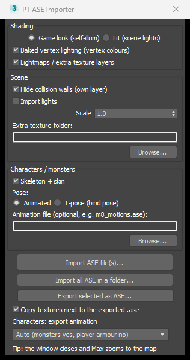

PT Tools for 3ds Max
Convert Priston Tale game files and work with them in 3ds Max 2020 or newer:
maps, weapons and items, monsters and characters, with textures, skeletons and animation.
(Using Blender? Open Guide_Blender.html instead.)
1. What you get
| File / folder | What it is |
|---|---|
PT_SMD2ASE.exe | The converter: game .smd files → .ase files. Nothing to install. |
3dsMax\ | The 3ds Max plug-in: importer, exporter and motion list (4 files). |
smd2ase.exe | The same converter for the command line (optional). |
Blender\ | The Blender add-on (see the Blender guide). |
Source\ | All source code. |
2. Install
The converter
Nothing to install. It runs on Windows 10 and 11. If Windows says "Windows protected your PC", click More info → Run anyway (the program isn't signed).
The 3ds Max plug-in (once)
Easiest: start PT_SMD2ASE.exe. Under 3ds Max / Blender plug-ins it lists every 3ds Max on your PC; click Install (or Update), then restart 3ds Max and do steps 4–5 below. It installs into your own user scripts folder, so it needs no administrator rights (an older copy in 3ds Max's own folder is updated where it is, and Windows asks for permission).
By hand:
- Close 3ds Max.
- Copy the 4 files from the
3dsMaxfolder (PT_ASE_Importer.ms,PT_ASE_Exporter.ms,PT_ASE_Reader.cs,PT_ASE_Skin.cs) intoC:\Program Files\Autodesk\3ds Max 2020\scripts\startup\. - Start 3ds Max.
- Go to Customize → Customize User Interface, open the Toolbars tab, and set Category to PT Tools.
- Drag PT ASE Import and PT Motions onto any toolbar.
PT_ASE_Importer.ms opens the importer without installing.3. Convert the game files
- Double-click PT_SMD2ASE.exe.
- Choose an Output folder (or keep the one shown).
- Drag an
.smdfile, a folder, or the whole game folder onto the big box at the top. A single file converts straight away. - For a folder, the window shows how many files it found and how long it will take. Tick I understand, continue and click Convert.
- Click Open to see the results.


Where the game files are
Inside your Priston Tale folder:
| Folder | Contains |
|---|---|
Field\ | Maps, plus the objects placed on them (trees, buildings, animated props) |
image\Sinimage\Items\DropItem\ | Weapons (itW…), armour, shields and other items |
char\monster\ | Monsters, one folder each |
char\tmABCD\ | Player armour (bodies), heads and costumes |
char\npc\ | NPCs |
Converter options
| Option | What it does |
|---|---|
| Copy + decrypt textures | The game's textures are scrambled. This writes readable copies into a textures
folder in the output folder. Leave it ticked. |
| Baked vertex lighting | Keeps the game's lighting and shadows on maps. Untick it for maps you will put back into the game. |
| Stage lights | Writes a map's light points (lamps, fires) as lights. |
| Split maps into separate objects | Cuts a map into separate objects (buildings, trees, terrain…), close to
how the original .ase files were made. Untick it to get the whole map as one mesh. |
| Collision walls | The invisible walls of a map: separate object (easy to hide), keep in mesh, or remove. |
| Also save the model info for the server | Only for the whole game folder (below): a _server copy of the model info in the game's Korean code page. |
.ase files need the textures folder.
Player armour and heads also need their class animation file (m1_motions.ase … m8_motions.ase),
which the converter writes into the same folder.Command line, for scripts: smd2ase.exe <file or folder> -o <output folder> --textures.
Run smd2ase.exe --help for every option.
The whole game folder
Drop the whole Priston Tale folder onto the window (or any folder with sounds, text or .inx files in it): there is nothing to pick, every kind of file is converted.
Everything comes out readable, in the game's own folder layout:
| Game file | Becomes |
|---|---|
.smd | .ase (as above) |
.bmp / .tga | Normal images, next to their models |
.wav sound effects | Playable waves (the game scrambles their first 4 bytes). Music (.bgm) is saved as .wav. |
.inf .ini .in .sin .msg .txt .lua | Korean text, saved as UTF-8 so any editor shows it |
.inx | The compiled model info of monsters, NPCs and player models, rebuilt as the .ini /
.inf / .in it was made from: model files, detail levels, and every animation with its frames and key events |
_server\ | The model info files again in the game's Korean code page: the form the server reads |
Back to game format… goes the other way for files you edited:
.ini / .inf / .in → .inx, .wav, .bmp and .tga → the game's own headers,
written to game_format in the output folder. Keep the game's folder names (char\monster\…): an .inx stores a checksum of its own path.

4. Import into 3ds Max
- Click PT ASE Import on your toolbar.
- Click Import ASE file(s)… and choose one or more
.asefiles. Or use Import all ASE in a folder… (sub-folders included). - The window closes and a progress bar runs at the bottom (Cancel stops it). When it's done, 3ds Max zooms to what you imported.
The window remembers your settings. The defaults are right for almost everything.

| Option | What it does |
|---|---|
| Game look / Lit | Game look shows the model exactly as the game does and ignores your lights. Lit keeps the textures and lets your own lights shade it. |
| Baked vertex lighting | Uses the game's lighting stored in the map. |
| Lightmaps / extra texture layers | Dungeons and newer maps have a second, pre-lit texture layer. |
| Hide collision walls | Puts the invisible walls on their own hidden layer. |
| Import lights | Brings in a map's light points. |
| Scale | Leave at 1.0 so maps keep lining up with each other. |
| Extra texture folder | Another folder to look for textures in, by file name. The game's own scrambled textures work here too. |
| Skeleton + skin | Characters and monsters get their bones and a Skin modifier. Untick for a plain mesh. |
| Pose: Animated / T-pose | Animated loads every animation and the motion list. T-pose loads only the bones, in their rest pose. |
| Animation file | Optional. Pick a motions file yourself (see section 9). |
5. Maps
- Convert a map's
.smdfromField\, or the wholeFieldfolder. - Import the
.ase. Maps keep their real position in the world, so importing several makes them line up exactly as in the game. - The map comes in as separate objects: terrain, buildings, trees, walls. Select one to see its name in the Modify panel.
Each name ends with the object's main texture (
village-1_017_sod_roof), because the game file keeps the objects apart but not their names. - Every object has its pivot in its own middle, so the move gizmo appears on the object you select.
- The split is close to the original files but not exact: copies of the same thing next to each other (a row of torches) can come out as one object, and some big objects in a few pieces. Attach or detach as you like; the game joins everything into one map anyway.
- The invisible collision walls go on a hidden
<map>_collisionlayer. - Objects placed on the map (trees, houses, windmills) are separate
.asefiles in the same zone folder. Import them as well.

6. Weapons and items
- Convert files from
image\Sinimage\Items\DropItem\. Names starting withitWare weapons; the otherit…files are armour, shields and other items. - Import the
.ase. Weapons and items are plain textured models with no skeleton.

itWA105).7. Monsters
- Convert a monster's
.smdfrom its folder inchar\monster\. Each monster's animation is stored inside its own.ase, so you only need that one file. - Monsters with several detail levels keep only the high-detail model.
- Import with Pose: Animated. The monster comes in with its bones (yellow boxes), skinned and animated, and the PT Motions list opens (walk, run, attack, damage, die…).
…-die.smd). Convert and import it the same way.
A few monsters keep their animation in a separate motion file (for example MonGknight-model uses mGknight);
the converter still puts the animation in the .ase so you can watch it.8. Characters
Player armour (bodies), heads and costumes are in char\tmABCD\. Each class shares one animation file,
which the converter writes next to the armour automatically:
| File names | Class | Animation file |
|---|---|---|
TmbA TmbB MmbA | Mechanician, Fighter, Knight | m1_motions.ase |
TfbD MfbB | Archer, Atalanta | m2_motions.ase |
MmbD | Magician | m3_motions.ase |
TmbC | Pikeman | m4_motions.ase |
MfbC | Priestess | m5_motions.ase |
TfbE | Assassin | m6_motions.ase |
MmbE | Shaman | m7_motions.ase |
TfbF | Martial Artist | m8_motions.ase |
b = body, h = head, m/f = male/female, a leading C = costume.
All of them use their class's file.
- Convert the armour (and head) you want. The class file is written into the same output folder.
- Import with Pose: Animated. Player armour carries the whole class animation (thousands of frames), so it takes 10–20 seconds.
- The PT Motions list opens. Click a motion and the time slider jumps to just that motion. Click Play / Stop to watch it, or Whole timeline to see everything again.


9. Original artist ASE files
The developers' own character files (for example TfbF01.ASE, CtfbF12.ASE) only hold the model and its
bones, so on their own they open in T-pose. To animate them:
- Convert any one armour of the same class, for example
char\tmABCD\TfbF01.smdfor Martial Artist. You now havem8_motions.asein the output folder. - Copy the original
.ASEfiles into that output folder, or pickm8_motions.aseunder Animation file. - Import with Pose: Animated.
- If the animation file can't be found, the character comes in T-pose and a message tells you which file it looked for.
- The importer puts the character on the game's own class skeleton, so it moves exactly as in the game, even when the original file's bones were saved slightly differently.
- Textures: original files point to folders on the artist's computer. Set Extra texture folder to the
game's
char\tmABCDfolder, or keep the files in a converted output folder (itstexturesfolder is searched).
10. Export
- Select the objects to export. For a map, select all of its objects. If it should keep its walls, unhide the
<map>_collisionlayer and select those too. - Open PT ASE Import and click Export selected as ASE…. Use the original name, for example
fore-1.ase. - Keep Copy textures next to the exported .ase ticked. Every texture is copied into the same folder.
- Use this exporter, not 3ds Max's own ASCII Scene Export, which drops the lightmap UV channels.
- Material names hold the game's keywords (
wind:,wall:,BLEND_LAMP:…). Keep them: renaming a material changes how the game draws it. - An imported model exports back exactly where it was. Anything you move or edit is written with its new shape.
Characters and monsters
Select the skinned mesh (or any of its bones) and export. The exporter writes everything the game needs:
- the mesh in its rest pose, whatever frame the time slider is on;
- every bone, written the way the game reads bones;
- which bone each vertex follows (the game uses one bone per vertex: the strongest Skin weight wins);
- the animation, depending on Characters: export animation:
| Setting | What gets written |
|---|---|
| Auto (recommended) | Monsters: their animation. Player armour and heads: no animation, because the game takes it from the
class file (m1–m8). Monsters whose animation lives in a separate motion file: no animation either. |
| Always | The animation, whenever there is one. |
| Never | Bones and skin only. |
11. Putting your work back into the game
When the game finds an .ase without a matching .smd, it builds the .smd (and, for
animated models, the .smb) itself when it starts.
- Back up the original files first.
- Export with the same name as the original
.smd(fore-1.aseforfore-1.smd,itWA105.aseforitWA105.smd,Tees.aseforTees.smd). - Copy the
.aseand its textures into the original's game folder. - Rename or remove the old files the game should rebuild (table below), then start the game.
| Model | Remove | Keep |
|---|---|---|
| Maps, map objects, weapons, items | its .smd | |
| Player armour, heads, costumes | its .smd | the class files m1.smb … m8.smb |
Monster with its animation in the same file (e.g. Tees) | its .smd and .smb | its .inx |
Monster with a separate motion file (e.g. MonGknight-model + mGknight) | the model's .smd | the motion .smb (mGknight.smb) and the .inx |
- For maps going back into the game, convert with Baked vertex lighting unticked. Otherwise the game lights them twice.
- If the game shows black or missing textures, scramble them the way the game expects with
smd2ase.exe --encode-textures "<game folder of the model>". - For monsters with a separate motion file, the model (mesh and skin) can be changed; their animation can't be replaced yet.
- The exported files have the same layout as the developers' own files, but the game's rebuild step itself can only be tested in the game. Try one file first, and keep your backups.
Problems?
"PT Tools" is missing in Customize User Interface
Check that all 4 files are in the scripts\startup folder, then restart 3ds Max.
The model is white or untextured
Convert with Copy + decrypt textures ticked and keep the textures folder next to the .ase files,
or set Extra texture folder. A few textures don't exist in the game at all; they're listed in missing_textures.txt.
A character comes in T-pose
Check that Pose is Animated, and that the class animation file (m1_motions.ase … m8_motions.ase) is
next to the .ase or picked under Animation file.
Nothing shows after importing
Use Zoom Extents All (Shift+Ctrl+Z). Maps sit far from the centre of the scene.
Importing a character is slow
Player armour carries thousands of frames of animation. 10–20 seconds is normal. Choose T-pose if you only need the model.